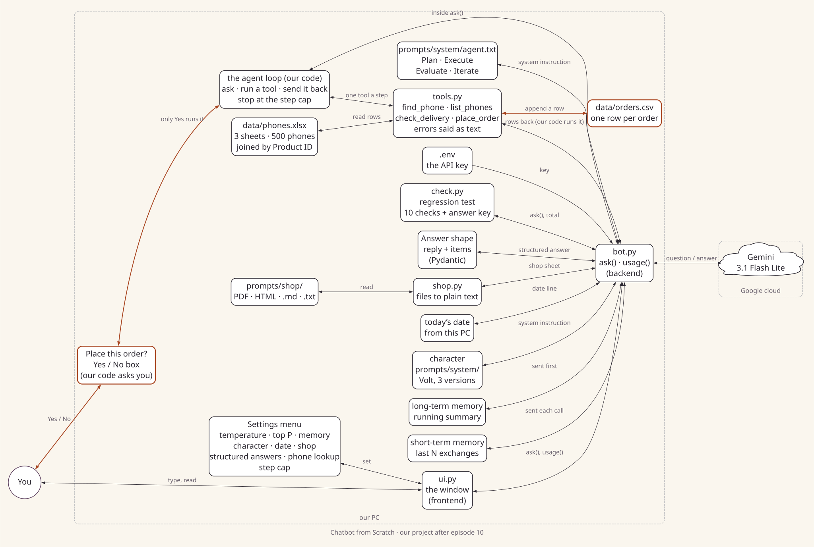

Prefer to watch? This chapter goes with Episode 10 (8:59). Open it on YouTube.
.venv and data/phones.xlsx. Antigravity, signed in: install Antigravity on Windows. Your own Gemini key in .env..env with GEMINI_API_KEY; the README shows the setup.A wrong "we don't sell it"
Open the window from Chapter 9 and ask Volt one price:
How much is the Galaxy S25 with 12GB / 256GB?
In our recording, Volt replied: I am sorry, we do not sell the Galaxy S25. The grey lines show two searches, both with 0 rows. Yet the shop sells it: Chapter 8 found it at 69,999 rupees.
Nothing crashed. No error showed. A customer would simply believe it.
Why Volt said no
Before that take, we renamed the workbook, as happens when someone tidies a folder. The data folder held only phones-old.xlsx.
| What happened | Why | |
|---|---|---|
| Case 1 | The workbook was missing | find_phone could not open it and sent back an empty list |
| Case 2, found off camera | A search with 12GB/256GB in it | find_phone matched only brand and model, never the variant, so this came back empty too |
To Volt, an empty list means one thing: no such phone. So the fix is plain. A tool that fails must say so, as text.
Prompt 1: honest tools
Create prompts/10-honest-tools.txt with this prompt. It asks for three things. Every tool returns its error as text. find_phone searches the variant. And our loop runs each tool inside a try.
Task : Make our tools honest when they fail: a tool that cannot do its job says so, and the agent loop passes that on to Volt instead of hiding it or crashing
Context :
- Use the virtual environment .venv in this folder. Don't create a new one.
- Today, when data/phones.xlsx is missing, find_phone and list_phones return an empty list, the same answer as "no such phone". Volt then tells the customer we don't sell it.
- In tools.py, when the workbook cannot be found or opened, every tool returns an error as text instead of rows, for example: "The phone catalogue could not be opened: data/phones.xlsx was not found."
- find_phone matches only the brand and model name, so a search with the variant, such as find_phone("Galaxy S25 12GB/256GB"), finds nothing, and Volt says we don't sell it. Make find_phone match the words against the brand, the model and the variant together, whatever spaces sit around the "/".
- In bot.py, the agent loop runs every tool inside a try. When a tool raises an error, send its message back to Gemini as the tool's result, as text, and carry on with the loop.
- In the window, a step whose tool failed shows the error in its grey line, for example: Step 1: find_phone("Galaxy S25") -> error: the phone catalogue could not be opened.
- Don't change prompts/system/agent.txt; I will add a line myself.
- Keep the step cap, the step lines, structured answers, the date, the shop sheet, the character, the memory, the settings and everything else as it is.
- Don't write test files; I will try it myself.
Folder arch :
- ui.py : the window (frontend)
- bot.py : the chatbot (backend), an agent: the loop and the step cap
- tools.py : find_phone, list_phones, check_delivery; reads data/phones.xlsx
- shop.py : reads the shop files into plain text
- check.py : our regression test
- data/phones.xlsx : the 500 phones, 3 sheets
- prompts/ : our prompts
- prompts/system/agent.txt : how Volt works step by step with tools
- prompts/shop/ : our shop files
Asking for the error as text, not a crash and not an empty list, is what lets Volt tell the customer the truth.
Review and implement prompts/10-honest-tools.txt
The agent changes 3 files and tests its own work. Click Accept all.
Then add one line yourself, at the end of prompts/system/agent.txt:
If a tool returns an error, tell the customer you could not check, and never guess.
A note on the model. In Antigravity we used the Gemini 4 Hydrogen model, with thinking effort Medium. Pick the model your Antigravity offers.
What changed
tools.py: a missing workbook now returns a message, "The phone catalogue could not be opened".find_phonesearches brand, model and variant together.bot.py: each tool runs inside atry. A failed tool's error goes back to Gemini as text.ui.py: a failed step shows its error in the grey line.
Honest, live
Run python ui.py with the workbook still renamed, and ask the same question. Now the grey line reads find_phone(...) -> error: The phone catalogue could not be opened. Volt says it is not certain of the price and will check with the shop.
Rename the file back to phones.xlsx and ask once more. find_phone finds 4 rows, variant and all. The Galaxy S25 with 12GB / 256GB is 69,999 rupees, in stock.
A tool that acts
Every tool so far only looked something up. A wrong look-up costs a second question. An order happens in the real world.
So the agent may ask for an order, but our code asks you first, and only your yes runs it. This is called human in the loop.
Prompt 2: a yes before an order
Create prompts/10-order.txt. A new tool, place_order, adds one row to a new file, data/orders.csv. Before it runs, our code stops and shows a small box. Only Yes runs it.
Task : Let Volt place an order, but only after the customer says yes in the window: our code asks, not the prompt
Context :
- Use the virtual environment .venv in this folder. Don't create a new one.
- Add place_order(product_id) to tools.py. It looks up the phone as check_delivery does. When the phone is In stock or Low stock, it adds one row to data/orders.csv: order number (ORD-0001, ORD-0002, ...), date and time, product ID, model, variant, price in rupees, delivery date. It creates the file with a header row the first time. When the phone is Out of stock, it adds no row and returns an error as text.
- find_phone also returns each phone's product ID, as list_phones does, so Volt has it when it orders.
- place_order only adds rows to data/orders.csv. It never changes data/phones.xlsx.
- In bot.py, tell Gemini about place_order with a one-line description.
- Before our code runs place_order, it stops and asks the customer. The yes/no question is a function that ask() receives; the window passes its own. Without one, the answer is No.
- In the window, the question is a small box, "Place this order?", with the phone, variant, price and delivery date, and two buttons, Yes and No. Only Yes runs place_order.
- On No, our code sends back to Gemini, as the tool's result: "The customer said no. No order was placed." Then the loop carries on.
- This question can't be switched off in Settings.
- The grey step line shows the answer, for example: Step 2: place_order("VZ-0018") -> customer said yes -> ORD-0001, or: Step 2: place_order("VZ-0018") -> customer said no.
- Keep the honest tool errors, the step cap, the step lines, structured answers and everything else as it is.
- Don't write test files; I will try it myself.
Folder arch :
- ui.py : the window (frontend)
- bot.py : the chatbot (backend), an agent: the loop, the step cap, the yes/no before an order
- tools.py : find_phone, list_phones, check_delivery, place_order; reads data/phones.xlsx
- shop.py : reads the shop files into plain text
- check.py : our regression test
- data/phones.xlsx : the 500 phones, 3 sheets
- data/orders.csv : the orders Volt placed (made by place_order)
- prompts/ : our prompts
- prompts/system/agent.txt : how Volt works step by step with tools
- prompts/shop/ : our shop files
"Our code asks, not the prompt." A rule in a prompt is a request the model may skip. A box in our code cannot be skipped.
Review and implement prompts/10-order.txt
The agent changes 3 files and tests its own work again. Click Accept all.
The order code
tools.py:place_orderonly appends a row toorders.csv. It never touches the phone workbook.bot.py: beforeplace_orderruns, our code asks. With no answer, the answer is No. On No, Gemini hears: "The customer said no. No order was placed."ui.py: the box itself, Place this order?, with Yes and No.
Place this order?
Order the Galaxy S25 with 12GB / 256GB for me.
The box comes up with the phone, its variant, 69,999 rupees and the delivery date. Volt waits. Click No: Volt says it could not place the order, and the grey line reads place_order("VZ-0018") -> customer said no.
Ask again and click Yes: order ORD-0001, with its delivery date. Open data/orders.csv. It has exactly one row; the No left nothing behind.
In our recording, a "Total" line still showed under the cancelled order. The released code no longer shows a total when you say No.
Two new checks
Our regression test grows with the bot. Create prompts/10-check.txt:
Task : Add two checks to check.py, one for each of our two guards Context : - Use the virtual environment .venv in this folder. Don't create a new one. - Keep the 8 checks as they are. - Check 9, a missing workbook: hide data/phones.xlsx for this check only, by renaming it, and always put it back afterwards, even when the check fails. Ask "How much is the Galaxy S25 with 12GB / 256GB?". It passes when the total is 0 and Volt's reply does not say that we don't sell it. - Check 10, an order without a yes: ask "Order the Galaxy S25 with 12GB / 256GB for me." and answer the yes/no question with No. It passes when data/orders.csv has the same rows before and after. - Print both in the same table as the other checks, with the same columns, and the score out of 10. - Don't change anything outside check.py. Folder arch : - check.py : our regression test - bot.py : ask() receives the yes/no question as a function - data/phones.xlsx : the 500 phones, 3 sheets - data/orders.csv : the orders Volt placed
A guard you can test is a guard you can trust.
Review and implement prompts/10-check.txt
The agent adds both checks and runs the test itself. Click Accept all.
| Check | What it does | It passes when |
|---|---|---|
| 9 | Hides the workbook, asks the S25 price, then always puts the workbook back | No price comes back, and Volt does not say we don't sell it |
| 10 | Asks for an order and answers the box with No | orders.csv has the same rows before and after |
python check.py
10 of 10 passed.
Our two guards
- Errors as text. A tool that fails says so; it never hides behind an empty answer.
- A yes before any action. Our code asks you, not the prompt.
Two guards are a start, not the whole job. An agent must also doubt what its tools send back; the Agents series picks up there.
Ten chapters, one assistant
From one API call to an agent we can trust. Here is every step, with the name to search for:
| Chapter | What Volt gained | The technical name |
|---|---|---|
| 1 | A first reply from Gemini | API call, API key in .env |
| 2 | Its own window | Frontend (ui.py) and backend (bot.py) |
| 3 | Settings for its answers | Temperature, top-P, max tokens |
| 4 | A memory of the chat | Short-term memory, running summary |
| 5 | A character, Volt | System prompt |
| 6 | Today's date and our shop | Grounding, context |
| 7 | Prices our code can use | Structured output, Pydantic, regression test |
| 8 | A look-up in our own data | Function calling, tools |
| 9 | Several look-ups in a row | Agent loop: Plan, Execute, Evaluate, Iterate; step cap |
| 10 | Honest failures, a yes before an order | Errors as text, human in the loop |

Quick reference
Every command from this chapter. The prompts are above.
| Command | What it does | Use it when |
|---|---|---|
Review and implement prompts/10-honest-tools.txt | Errors as text, the variant search, a try around each tool | First |
Review and implement prompts/10-order.txt | Adds place_order and the Yes / No box | After prompt 1 |
Review and implement prompts/10-check.txt | Adds checks 9 and 10 | After prompt 2 |
python ui.py | Opens the window | To ask Volt |
python check.py | Runs the regression test | After every change |
The takeaway
- An empty answer is not the same as "none": make every tool say when it could not look.
- Let the agent ask for actions, but let your code ask the person before any of them runs.
- Lock each guard in with a check, so a later change cannot quietly break it.
Should cancelling need a yes too?
The goal: put a second action behind the same box.
The steps: in your copy of the Chapter 9 project, give the agent panel the three prompts of this chapter. Then add a tool, cancel_order, that removes an order from orders.csv, behind the same Yes / No box.
Guess first: should cancelling need a yes too?
One question for you: what is one thing you would never let an AI agent do without asking you first?
References
Where each number on this page comes from. Everything was also checked in our own recording on 28 Nov 2026.
- Google · Function calling with the Gemini API Tool calls, and sending each tool's response, or its error, back to the model. https://ai.google.dev/gemini-api/docs/function-calling
- Python · Errors and exceptions The try and except around each tool. https://docs.python.org/3/tutorial/errors.html
- Python · csv, CSV file reading and writing How place_order appends one row to orders.csv. https://docs.python.org/3/library/csv.html
- Learn AI by Building · chatbot-from-scratch on GitHub Every chapter's finished code and prompts. https://github.com/Aditya-402/chatbot-from-scratch
- My own recording · 28 Nov 2026, Windows 11 Every answer, step and number on this page is from those takes, on Gemini 3.1 Flash Lite; the off-camera test of the variant search too.
New chapters and episodes come out every week. Follow along on YouTube or the WhatsApp channel. Questions? Ask under the video on YouTube; I read every comment.